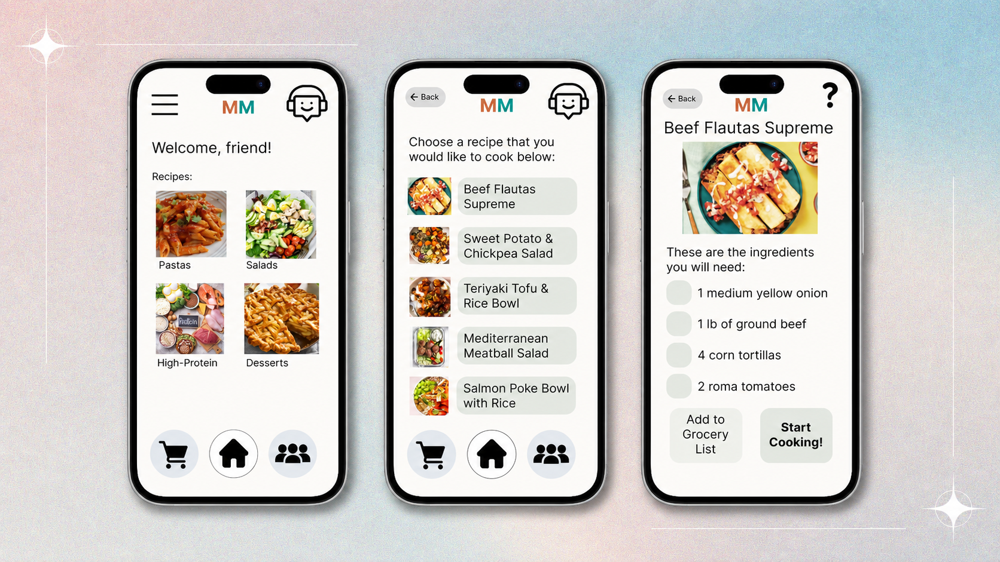
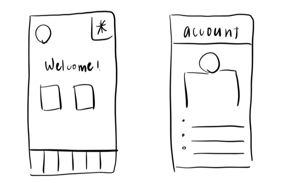
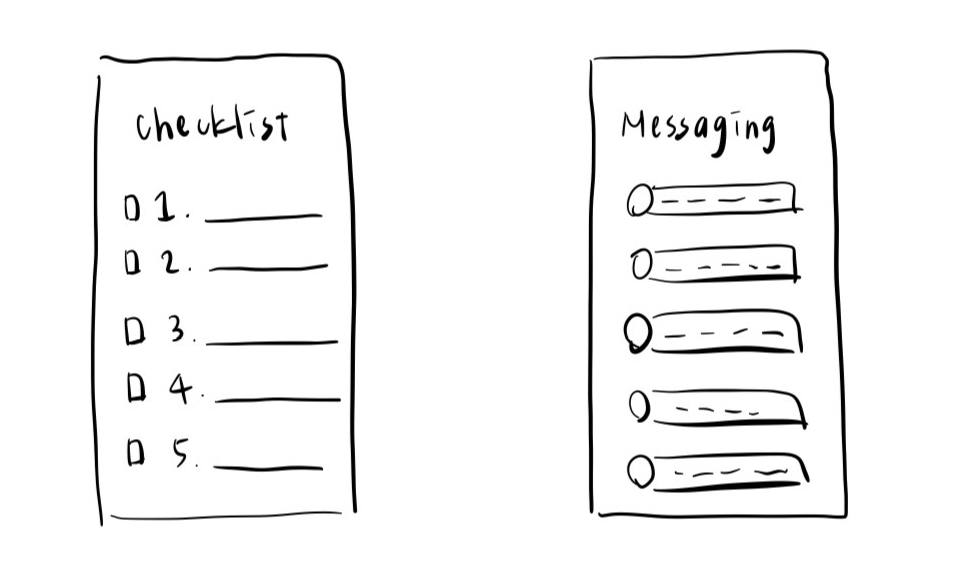
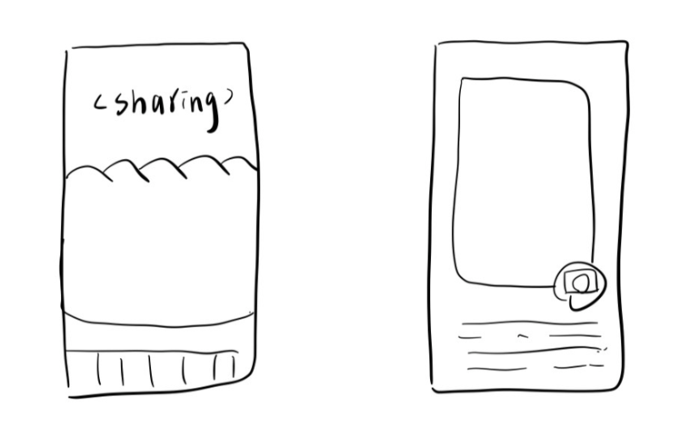
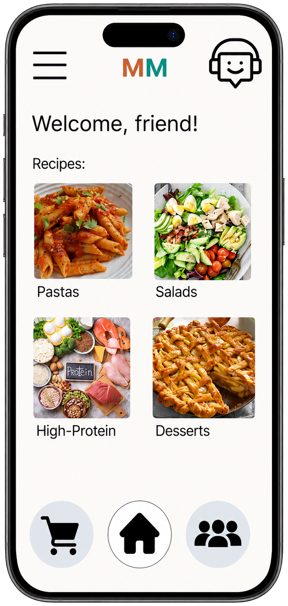
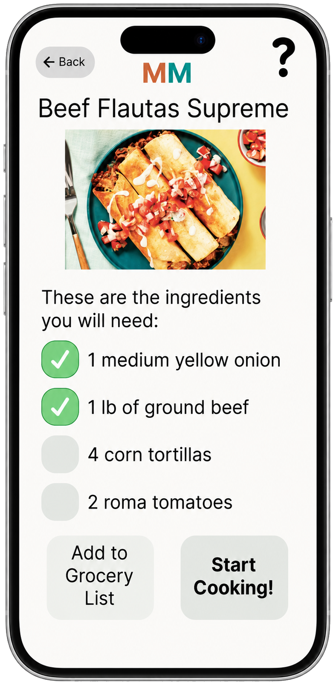
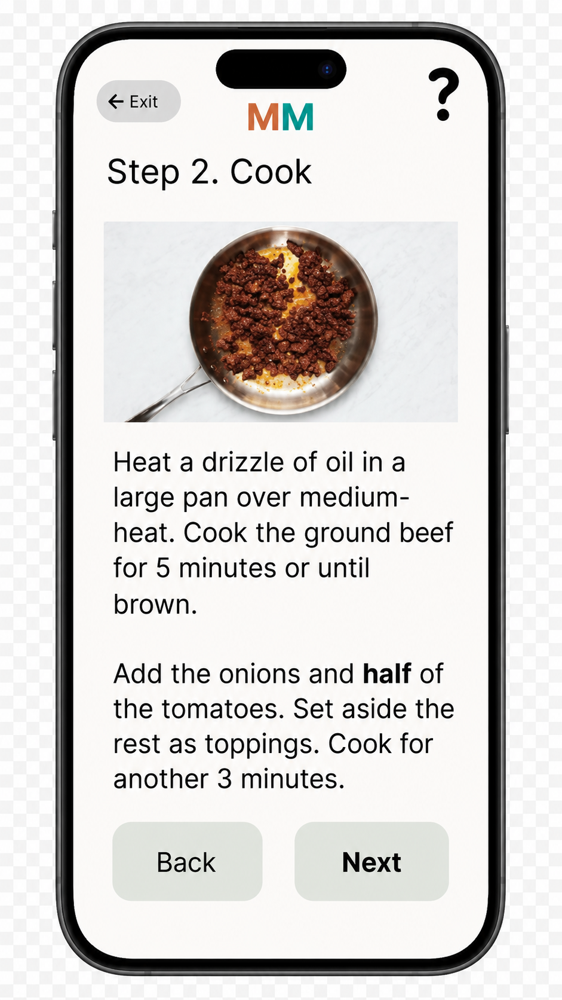
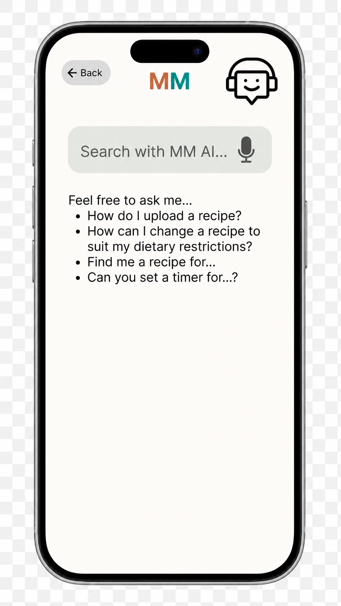
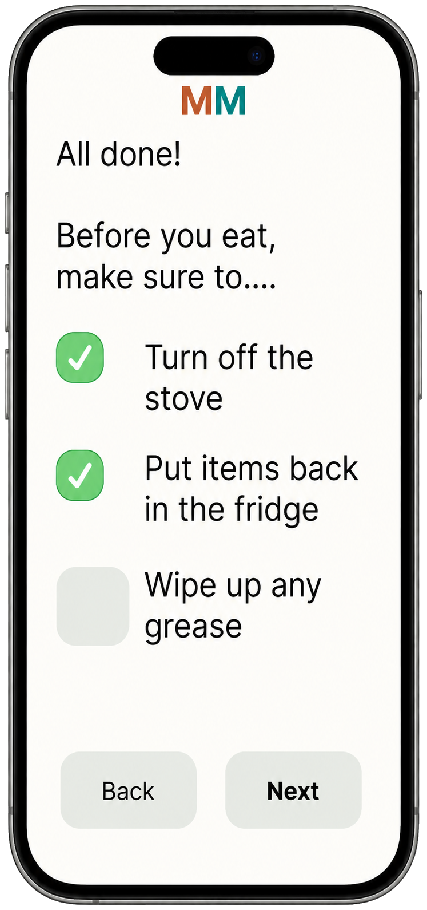
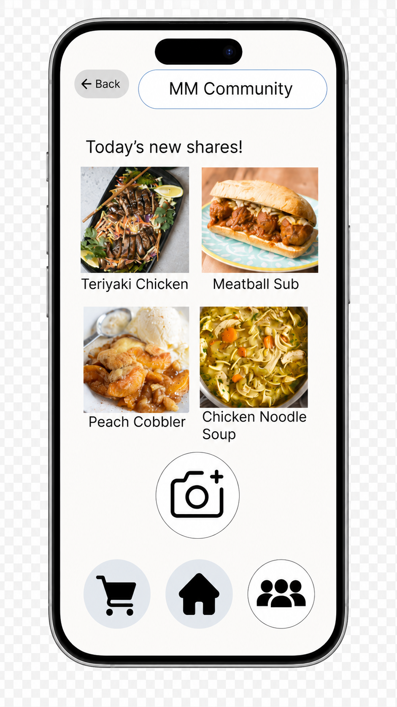

Cognitive Support App
Safety and Empowerment in the Kitchen
September 2025 – March 2026

Intro
MindfulMeals is a mobile health app concept designed to support adults experiencing early cognitive changes, especially those who are still independent but beginning to struggle with complex daily tasks. The project focuses on cooking because meal preparation is a meaningful instrumental activity of daily living that requires memory, sequencing, attention, and safety awareness.
This work was presented at the HFES International Symposium on Human Factors and Ergonomics in Health Care as part of the Student mHealth App Competition , where our team received second place in the finals. The concept was developed to address pain points in instrumental activities of daily living by emphasizing accessible design, independence, and kitchen safety for adults with mild cognitive impairment or early cognitive changes.
The motivation behind MindfulMeals is both practical and personal. Cooking is not only a daily task, but also a way people maintain independence, family traditions, and identity. MindfulMeals aims to preserve independence and dignity by providing structured, low-cognitive-load support during meal preparation.
Skills
Human-Centered Design, Human Factors Engineering, mHealth Design, UX Research, Persona Development, Journey Mapping, Cognitive Accessibility, Figma Prototyping, SME Feedback, Usability Planning
My Role
As part of the MindfulMeals team, I contributed across human factors research, user-centered design, prototyping, and presentation development.
- Translated user needs into practical design features that reduce cognitive load and support kitchen safety.
- Helped develop personas, journey mapping, feature rationale, and prototype flow with a focus on adults with mild cognitive impairment.
- Contributed to the Figma prototype, especially the guided cooking experience, safety support, and accessibility-focused interaction flow.
- Represented the team at the HFES Health Care Symposium Student mHealth App Competition Finals, where we presented MindfulMeals and received second place.
Problem
Adults with early cognitive changes may still live independently, but they can experience difficulty with multi-step daily activities such as cooking. These challenges may include forgetting steps, losing track of ingredients, feeling anxious about safety, or needing extra support to complete familiar routines.
The core user need was a simple cooking-support tool that helps users follow one step at a time, remember key preparation and safety actions, and feel confident completing meals without relying entirely on caregivers.
Rather than adding another complex tool, MindfulMeals simplifies cooking by turning a full recipe into a guided flow: users choose a recipe, check ingredients, follow short step-by-step instructions, ask for help when needed, complete a safety check-out, and share the finished meal. This structure reduces the need to hold the entire cooking sequence in memory at once.
Existing apps often focus on general cognitive training, meal delivery, or recipe instructions, but they do not fully address the needs of users with mild cognitive impairment. MindfulMeals fills this gap by combining real-world cooking support, cognitive accessibility, safety reminders, and emotional value.
User Needs
To make the problem more concrete, we translated the research and journey mapping into four core user needs. These needs helped guide the final prototype features and kept the design focused on simplifying cooking rather than adding another complicated tool.
01
Follow one step at a time
Users need support breaking cooking into smaller, manageable actions so they do not have to keep the full recipe sequence in mind at once.
02
Remember preparation and safety actions
Users need reminders for ingredients, preparation tasks, and end-of-task safety steps such as turning off the stove or cleaning up spills.
03
Get help without losing independence
Users need access to support when they are unsure, while still feeling capable of completing the task on their own.
04
Keep cooking meaningful and motivating
Users need a tool that supports not only function and safety, but also emotional value, family traditions, and encouragement.
How MindfulMeals Simplifies Cooking
A key design concern was making sure the app reduced cognitive load instead of creating more work. The final concept simplifies cooking by turning a complex activity into a guided sequence with visible reminders and optional support.
Without support
Cooking can feel overwhelming
- Full recipe must be managed at once
- Users may forget ingredients or steps
- Safety actions can be missed
- Asking for help may interrupt the flow
- Cooking may feel stressful or uncertain
With MindfulMeals
Cooking becomes guided and manageable
- Recipe is broken into short steps
- Ingredient checklist supports preparation
- Safety check-out reinforces key reminders
- Chatbot and voice support are available when needed
- Community sharing adds encouragement and emotional value
Current Solutions vs MindfulMeals
| Feature | Constant Therapy | Problem Solve It | Lumosity | HelloFresh | MindfulMeals |
|---|---|---|---|---|---|
| Focus | ✓ | ✓ | ✓ | ✓ | ✓ |
| Low Cognitive Load | × | × | × | ✓ | ✓ |
| Real-World Use | × | × | × | ✓ | ✓ |
| Safety | × | × | × | × | ✓ |
| Emotional Value | × | × | × | × | ✓ |
| User-Centered | × | × | × | × | ✓ |
Background Evidence
MindfulMeals was grounded in the relationship between cognitive health and instrumental activities of daily living, such as meal preparation. Adults with early cognitive changes may still live independently, but cooking can become more challenging when a task requires planning, sequencing, memory, and safety awareness. Prior research links cognitive health with daily nutrition and functional independence, while Alzheimer’s Association data highlights the broader prevalence and impact of cognitive impairment in older adults. [1] [2]
The design also considered common cognitive challenges related to prospective memory and executive function. These abilities are important for remembering future actions, following multi-step routines, managing attention, and completing everyday tasks safely. This helped us prioritize step-by-step cooking guidance, ingredient checklists, and safety reminders instead of designing a general recipe app. [3] [4] [5]
Beyond task completion, the project also considered the emotional and social value of cooking. Sharing meals and maintaining social connection can support well-being and quality of life for older adults, so MindfulMeals includes community sharing to help users preserve identity, family traditions, and encouragement beyond the cooking task. [6] [7]
Research or Design Methods
The project followed a human-centered and iterative design process, moving from research and needs definition to ideation, prototyping, and future evaluation planning.
01
Research
Reviewed literature on mild cognitive impairment, IADLs, prospective memory, executive function, cognitive health, and social connection.
02
Define Needs
Used SME feedback, personas, and journey mapping to narrow the scope and identify where users need support during cooking.
03
Ideate
Used Crazy 8s, brainstorming, and simplified UI concepts to explore ways to reduce cognitive load and support safety.
04
Prototype
Created a low- to mid-fidelity Figma prototype showing recipe selection, checklist, guided cooking, chatbot support, safety checkout, and sharing.
05
Plan Evaluation
Identified future usability testing needs with adults with MCI, caregivers, and community health partners.
Users / Stakeholders
The primary users are adults aged 50+ experiencing early cognitive changes that affect instrumental activities of daily living. These users may still be independent, but they may need structured support for tasks that require planning, sequencing, memory, and safety awareness.
To guide our design decisions, we created two representative personas based on our research and project scope. These personas are not actual users, but they helped us think through different needs, behaviors, and challenges within the target population.
Persona 1 of 2
Helen — Living with MCI
Secondary stakeholders include family members, caregivers, clinicians, senior centers, and community health organizations that may support adults with cognitive changes.
Early Exploration & Concept Sketches
Before moving into the final prototype, I explored early app structures through low-fidelity sketches. These sketches helped the team think through how MindfulMeals could support users across different parts of the experience, including app entry, preparation support, communication, and community sharing.

Entry & Personalization
Exploring a familiar starting point
The welcome and profile sketches explored how users might enter the app and manage personal information or preferences. This helped frame the experience as supportive and familiar rather than clinical.

Preparation Support
Reducing memory burden before cooking
The checklist concept explored how the app could help users track preparation tasks, ingredients, or key steps. This idea later informed the ingredient checklist and safety-focused support in the prototype.

Communication & Community
Supporting connection beyond the task
The messaging and sharing sketches explored how MindfulMeals could provide encouragement, support, and emotional value. These ideas informed the later chatbot support and community sharing features.
User Flow
After sketching possible app sections, I reorganized the experience around the cooking journey rather than isolated screens. The goal was to support users before, during, and after meal preparation while reducing cognitive load and safety risks.
Key Design Decisions
01
Use step-by-step guidance instead of full recipe instructions
Because cooking requires sequencing, attention, and working memory, the prototype breaks recipes into short guided steps instead of asking users to manage the full recipe at once.
02
Add a checklist before cooking begins
The ingredient checklist was designed to reduce planning burden and help users feel prepared before starting a multi-step cooking task.
03
Include safety check-out at the end of the task
The safety check-out supports critical end-of-task actions, such as turning off the stove and cleaning spills, which directly connects the design to kitchen safety and risk mitigation.
04
Keep emotional and social value in the experience
Community sharing was included because cooking is not only functional. It can also support identity, family traditions, encouragement, and a sense of accomplishment.
Results
The final prototype translated key user needs into a simple cooking-support flow. Instead of asking users to interpret a full recipe on their own, the screens guide users through one decision or action at a time. This supports step-by-step task completion, reduces memory burden, and promotes kitchen safety while keeping the experience familiar and non-clinical.

Recipe Selection
The home screen provides a simple entry point for choosing a meal. Clear recipe categories reduce decision effort and help users begin the task without feeling overwhelmed.

Ingredient Checklist
The checklist supports preparation before cooking by helping users confirm ingredients and materials. This reduces planning burden and gives users a clear sense of readiness before starting a multi-step task.

Guided Cooking Flow
The step-by-step cooking flow breaks recipes into short, manageable steps with visual support. This helps users stay oriented during the task without needing to remember the full recipe sequence at once.

AI Chatbot and Voice Support
The assistant gives users a place to ask questions when they are unsure or need a recipe adjustment. Voice input supports hands-free help while users are handling ingredients or kitchen tools.

Safety Check-Out
The safety check-out prompts users to confirm critical end-of-task actions, such as turning off the stove, putting items away, and cleaning up spills. This directly addresses forgotten steps and anxiety around kitchen safety.

Community Sharing
The community feature allows users to share completed meals and view meals from others. This adds emotional value by supporting social connection, encouragement, and a sense of accomplishment.
Key Findings / Outcome / Impact
The final concept positions MindfulMeals as more than a recipe app. It is a cognitive support tool that helps users complete a meaningful real-world activity with lower cognitive load, clearer safety support, and less need to independently manage every step from memory.
Lower Cognitive Load
Breaks recipes into manageable steps with visual support, preparation checklists, and optional help.
Improved Safety Support
Adds reminders, exit confirmation, and safety checkout steps for critical end-of-task actions.
Preserved Emotional Value
Supports family traditions, encouragement, and social connection through meal sharing.
Reflection / Next Steps
References / Links
[1] Puri, S., Shaheen, M., & Grover, B. (2023). Nutrition and cognitive health: A life course approach. Frontiers in Public Health, 11, 1023907. Source
[2] Alzheimer’s Association. (2023). 2023 Alzheimer’s disease facts and figures. Alzheimer’s & Dementia, 19(4), 1598–1695. Source
[3] Henry, J. D. (2021). Prospective memory impairment in neurological disorders: Implications and management. Nature Reviews Neurology, 17(5), 297–307. Source
[4] Marshall, G. A., Rentz, D. M., Frey, M. T., Locascio, J. J., Johnson, K. A., & Sperling, R. A. (2011). Executive function and instrumental activities of daily living in mild cognitive impairment and Alzheimer’s disease. Alzheimer’s & Dementia, 7(3), 300–308. Source
[5] Petersen, R. C., Lopez, O., Armstrong, M. J., Getchius, T. S. D., Ganguli, M., Gloss, D., et al. (2018). Practice guideline update summary: Mild cognitive impairment. Neurology, 90(3), 126–135. Source
[6] Dodds, L., Brayne, C., & Siette, J. (2024). Associations between social networks, cognitive function, and quality of life among older adults in long-term care. BMC Geriatrics, 24, 221. Source
[7] Yu, R., Lai, D., Leung, G., Tong, C., Yuen, S., & Woo, J. (2023). A dyadic cooking-based intervention for improving subjective health and well-being of older adults with subjective cognitive decline and their caregivers. Geriatrie et Psychologie Neuropsychiatrie du Vieillissement.